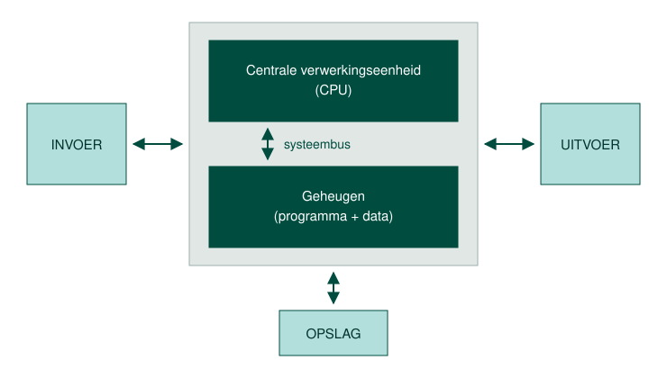

De eerste elektronische rekenmachines / computers hadden vaste programma's die niet gewijzigd konden worden. Deze waren gemaakt voor één specifieke taak en konden niet uitgebreid worden. Dit kwam omdat hun programmacode vast gecodeerd zat in een niet herprogrammeerbaar geheugen. We noemen dit ook wel single purpose computers.
Als men het programma wou wijzigen moest men ofwel de machine wijzigen ofwel het geheugen herprogrammeren. Dit nam heel wat tijd in beslag en dan nog was de machine slechts in staat om één specifieke taak uit te voeren.
John Von Neumann bedacht in 1945 een oplossing onder de vorm van de Von Neumann architectuur. De centrale verwerkingseenheid of processor staat in dit model centraal en haalt zijn instructies en gegevens zelf uit het werkgeheugen. Deze worden uitgevoerd en terug weggeschreven naar de randapparaten.
Doorheen dit onderdeel van de cursus staat dus één iets centraal: data en instructies moeten in het werkgeheugen aanwezig zijn. Dit principe zal, zoals je zal merken, heel wat gevolgen hebben op de werking van onze computer.
Doordat we wijzigende instructies en data in het werkgeheugen kunnen inladen kunnen we onze machine andere taken laten uitvoeren. We spreken dan ook van een general purpose computer.

Het schema noemt zes functionele onderdelen, en elk daarvan heeft in een moderne computer iets dat je kan aanwijzen. De invoer is alles waarmee gegevens de machine in gaan, zoals een toetsenbord of een muis, en de uitvoer is alles wat ze weer naar buiten brengt, zoals een scherm of een printer. De centrale verwerkingseenheid of CPU is de processor, die de instructies ophaalt en uitvoert. Het geheugen is het werkgeheugen, in de praktijk een of meer RAM-modules, en daar staan het programma en de data samen in. De systeembus is de verbinding waarlangs de processor en het geheugen met elkaar praten, op een moederbord de banen tussen de twee. De opslag is de schijf, een SSD of een harde schijf, en die houdt alles bij terwijl de machine uit staat.
Elk blok van dat schema heeft zijn eigen snelheid, en het traagste blok bepaalt hoe snel het geheel werkt. Dat traagste onderdeel heet de bottleneck. Bij het opstarten moet alles wat de computer nodig heeft van de opslag naar het werkgeheugen gelezen worden, want data en instructies moeten daar staan om uitgevoerd te kunnen worden. Start een computer traag op en werkt hij daarna vlot, dan wijst dat naar de schijf en niet naar de processor of het werkgeheugen.